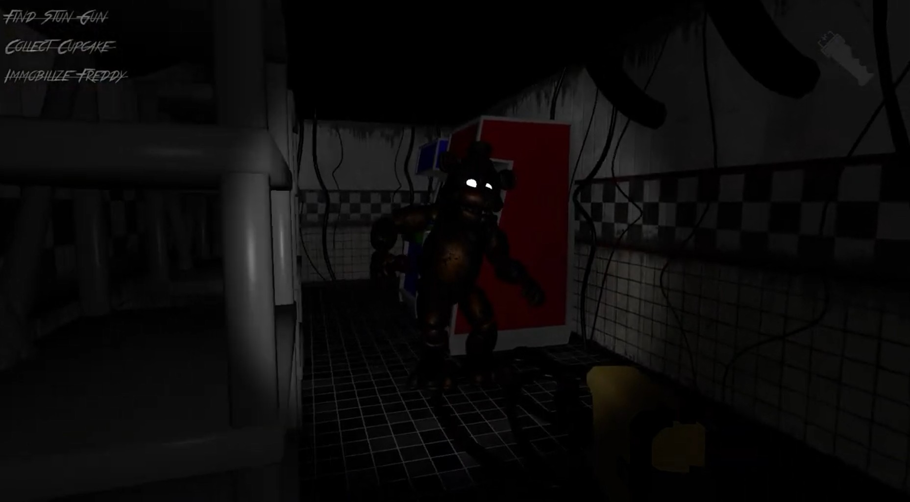
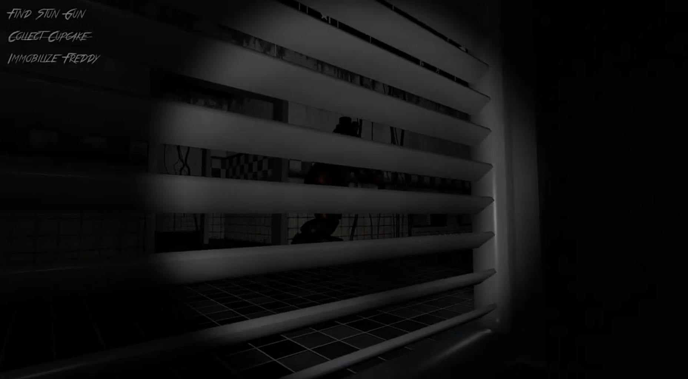
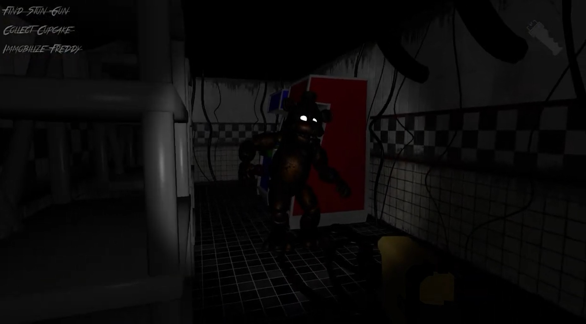
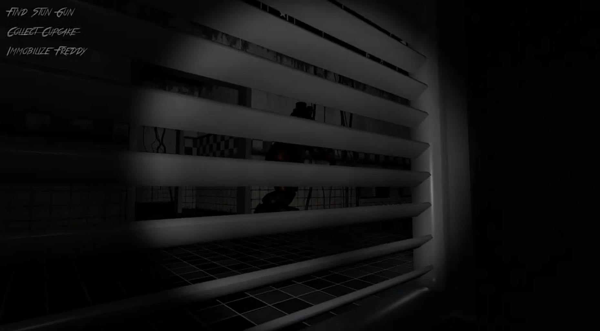

Role: Solo Developer | Year: 2024
Platform: PC / WebGL | Genre: FPS Survival Horror | Art Style: Stylized 3D | Target Audience: Teen+
Overview: Freddy’s Revival is a first-person survival horror experience developed in Unity, inspired by the Five Nights at Freddy’s franchise. Set inside an abandoned diner owned by Freddy Fazbear Entertainment, players assume the role of the iconic night guard tasked with shutting down a malfunctioning Freddy animatronic, recovering the companion character Cupcake, and escaping before being caught.
Unlike traditional point-and-click horror, Freddy’s Revival places players directly into a fully explorable 3D environment, emphasizing spatial awareness, movement-based tension, and real-time decision-making.
Gameplay: Players must explore the diner to locate a misplaced stun gun left behind by the previous staff. While navigating the maze-like interior, players evade animatronics using sprinting, hiding in vents, and environmental cover. Freddy relentlessly hunts the player, while Chica and Bonnie remain passive unless provoked—though stunning them may trigger aggressive behavior.
Core Features:
Tools & Workflow: Unity, NavMesh, State Machines, 3DS Max, Substance Painter, Photoshop, Procreate, Trello, Discord
 


